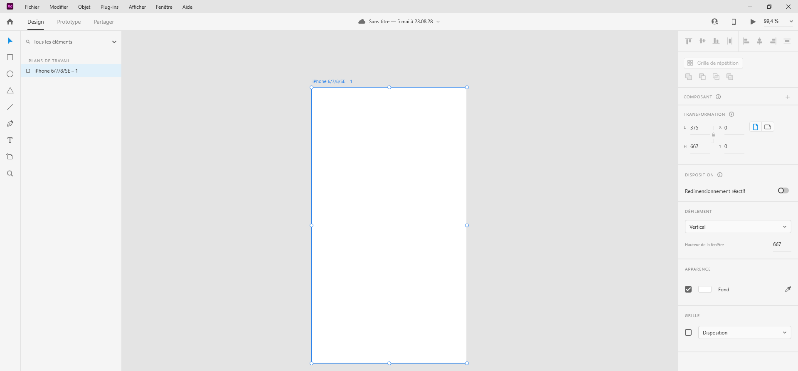

Introduction
Adobe XD est un logiciel permettant de concevoir, prototyper et partager des interfaces et des expériences interactives élaborées.
L'interface
L'espace de travail du logiciel est constitué d'une barre d'outils située à gauche et d'un inspecteur de propriétés situé à droite de l'interface.
Sous Windows, vous devez utiliser le clic droit de la souris sur un élément afin d'accéder au menu contextuel. De plus, la version PC dispose d'un burger menu situé dans le coin supérieur gauche.
